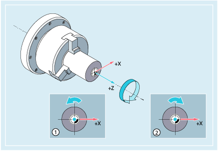
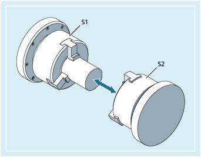

The spindle speed and direction of rotation values set the spindle in rotary motion and provide the conditions for chip removal.
① | Spindle direction of rotation clockwise (in the default setting) |
② | Spindle direction of rotation counterclockwise (in the default setting) |
Other spindles may be available in addition to the main spindle (e.g. the counterspindle or an actuated tool on turning machines). As a rule, the main spindle is declared the master spindle in the machine data. This assignment can be changed using an NC command.
S... / S<n>=...
M3 / M<n>=3
M4 / M<n>=4
M5 / M<n>=5
| SETMS(<n>) | |
| ... | |
| SETMS |
| Spindle speed for master spindle | |
Unit: | r/min | |
| Spindle speed for spindle <n> | |
Unit: | r/min | |
Note: | ||
| Direction of spindle rotation clockwise for master spindle | |
| Spindle direction of rotation clockwise for spindle <n> | |
| Direction of spindle rotation counter-clockwise for master spindle | |
| Spindle direction of rotation counter-clockwise for spindle <n> | |
| Spindle stop for master spindle | |
| Spindle stop for spindle <n> | |
| Set spindle <n> as master spindle | |
| If SETMS is programmed without a spindle name, the configured master spindle is used instead. | |
| Note |
Up to three S-values can be programmed per NC block, e.g.:
|
| Note |
SETMS must be in a separate block. |
S1 is the master spindle, S2 is the second spindle. The part is to be machined from two sides. To do this, it is necessary to divide the operations into steps. After the cut-off point, the synchronizing device (S2) takes over machining of the workpiece after the cut off. To do this, this spindle S2 is defined as the master spindle to which G95 then applies.
| Program code | Comment |
|---|---|
| N10 S300 M3 | ; Speed and direction of rotation for drive spindle = preset master spindle. |
| ... | ; Machining of the right-hand workpiece side. |
| N100 SETMS(2) | ; S2 is now the master spindle. |
| N110 S400 G95 F… | ; Speed for new master spindle. |
| ... | ; Machining of the left-hand workpiece side. |
| N160 SETMS | ; Switching back to master spindle S1. |
See also:
Spindle speed (S), spindle direction of rotation (M3, M4, M5): Further information